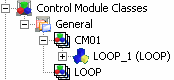
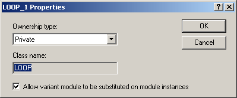
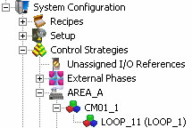
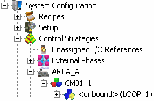
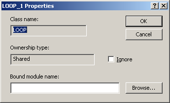
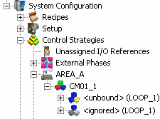

Class-based module blocks
Module blocks can be class based. One way to create class-based module blocks is by dragging a control module class onto another control module class. For example, the following figure shows the DeltaV Explorer view of result of dragging the control module class LOOP onto the control module class CM01.

A module block named LOOP_1 is created and the module block's class name (LOOP) is shown in parentheses. If you open the Properties dialog for LOOP_1 in the class definition it looks like the following figure.

Class-based module blocks can have an ownership type of Shared or Private. An ownership type of Private (the default) creates a module when the class is instantiated. For example, if you instantiate CM01 it appears in the hierarchy as shown in the following figure.

The instantiated module block appears with the control module icon in DeltaV Explorer and the Properties dialog for the module block is the Module Properties dialog. The class the block is based on is shown in parentheses (the value in parentheses (LOOP_1) is the name of the module block from the library. To see the class name look at the properties of the module named LOOP_11 where the Class name field contains LOOP). In Control Studio module blocks are always shown as module blocks.
An ownership type of Shared creates an unbound module block when the class is instantiated. For example, if LOOP_1's ownership type is changed to Shared, then instantiated, the instantiated module block looks like the following figure.

The icon is the module block icon and instead of a name <unbound> appears. At some point, you need to bind this unbound module block to a module. You do that by opening the Properties dialog of the instantiated module block and entering or browsing to an existing module.
While you are developing your control strategy you may want to ignore unbound module blocks. Ignoring a module block prevents the appearance of download or diagnostic errors for the unbound block. To ignore an unbound module block open the module block's instance properties in DeltaV Explorer and select the Ignore check box.

In the DeltaV Explorer hierarchy, ignored block icons are tinted gray and <ignored> appears instead of <unbound>.
An example of how the Ignore option can be used is in equipment modules. An equipment module class for a valve header could be configured to manipulate 10 valves. But on a specific instance of this equipment module class, there are only 9 valves. Therefore one of the module blocks does not have a real valve module to bind to. Instead of creating a dummy module, select the module block's Ignore check box. This sets that module block's _IGNORE parameter to TRUE. To use this value correctly, create logic at the class level to test the _IGNORE parameter and make the appropriate decisions.
The following figure shows how an ignored module block appears in DeltaV Explorer. In Control Studio the icon in the upper right corner of the module block has a similar appearance.

When a module block is bound, you can determine the location of the module it is bound to by selecting the module block's parent container, then selecting References from the context menu. The References dialog shows the module that each object in the selected container is bound to.